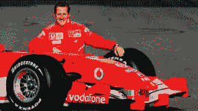
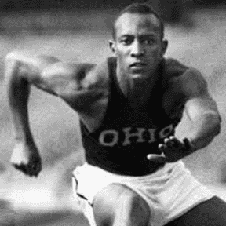
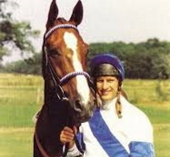
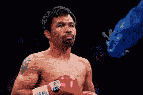
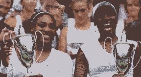
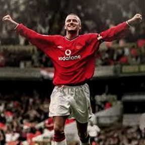
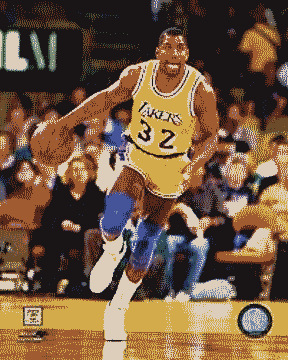
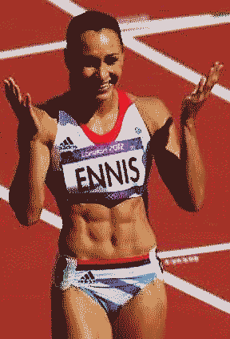
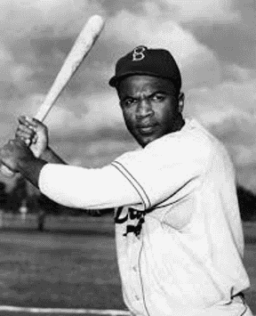

Muhammad Ali (Boxer)
The Louisville Lip talked the talk and walked the walk, being a part of some of the greatest boxing matches of the last century. Outside of the ring he remained larger than life, speaking out for civil rights and against the Vietnam War, even threwing his Olympic Gold Medal into the Ohio River after being refused service at a 'whites only' restaurant.
Michael Schumacher (Racing Driver)
Up there as one of the greatest Formula One drivers all time with 7 World Championships and 91 race wins under his belt. Living life in the fast lane on and off the track, he now faces his greatest challenge, fighting back from a life threatening brain injury.
Jesse Owens (Track Athlete)
The story of Jesse Owens is one of historical timing, as an outstanding young athlete he reached his full sporting potential at the time of the 1936 Olympics. The Olympics happened to take place in pre-war Berlin and were hijacked by Adolf Hitler to propel his Nazi Propaganda. The sight of a black athlete winning four gold medals hit at the core of his crazed Aryan ideology.
Bob Champion (Jockey)
The life of a jockey is pretty tough, and the sporting life of Bob was made harder when diagnosed with cancer. He battled against the illness to comeback and win the 1981 Grand National on his horse Aldaniti who itself had recovered from a career threatening injury.

Manny Pacquiao (Boxer)
Someone who has faced one of the most dramatic rises from poverty to multi million dollar success. Living on the streets of Manilla as a youngster, he propelled himself up through the ranks of boxing with sheer hard work and determination to become one of the highest paid sports stars on the planet.

Williams Sisters (Tennis)
Ok, so sneakily I’ve put them under one person, but with the list a bit male dominated it needs some balance. Their father is criticized for some of the practices used to propel them to stardom, but that shouldn't detract from their huge achievement of rising to the top of what was historically a white, middle class dominated sport. Their father was by no means poor, but choose to move his family to the LA projects. His reasoning was to provide them with a tougher upbringing with which to create their hunger for success.

David Beckham (Footballer) Marmite to a lot of football fans but there was no doubt denying his outstanding talent, added to that his turnaround from national hate figure after his sending off in the 1998 World Cup to the golden boy of world football. He played a part in the re-emergence of soccer in the USA and now serves as an ambassador for British sport supporting the London Olympic bid for 2012.

Magic Johnson (Basketball player)
LA Lakers superstar basketball player Magic faced incredible prejudice when diagnosed with HIV in 1991. Forced to retire whilst at the peak of his career he returned to the game, only to be forced out again until coming back for a successful third shot. After his final retirement he became a prolific campaigner, aiming to educate people about HIV discrimination.

Jessica Ennis-Hill (Heptathlete)
The poster girl for London 2012, the expectation and pressure to succeed was incredible. She matched the public adoration and succeeded in taking Olympic Gold and inspired many young British girls to participate in sport and realise that being sweaty was indeed cool #thisgirlcan

Jackie Robinson (Baseball Player)
In 1947 became the first black sportsman to compete in American Professional sport, amazingly rather than being held in high esteem, he faced years of bullying and racism from all quarters. His perseverance and grit paved the wave for those that followed him.